Item icons
Every material, drop, crafted good, trap and bait in a cream ground with a dark-green contour. The small labels are the items' internal names.
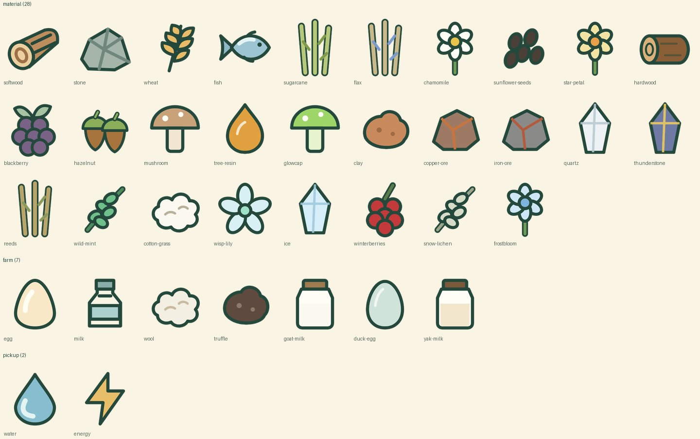
Materials, farm goods and pickups. 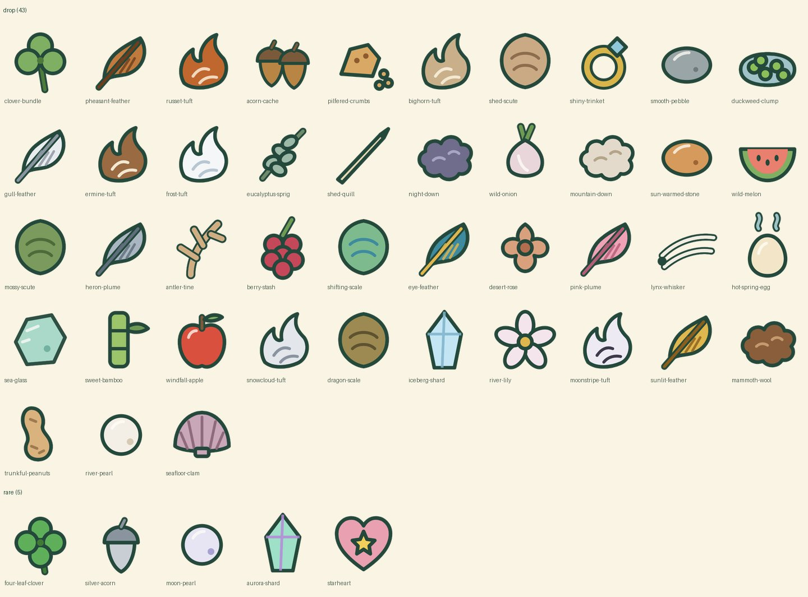
Drops that critters leave behind, and rare finds. 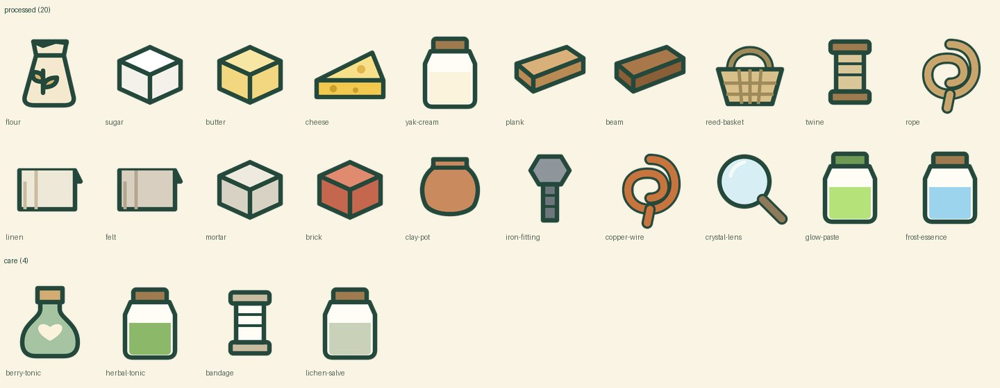
Crafted goods and care items. 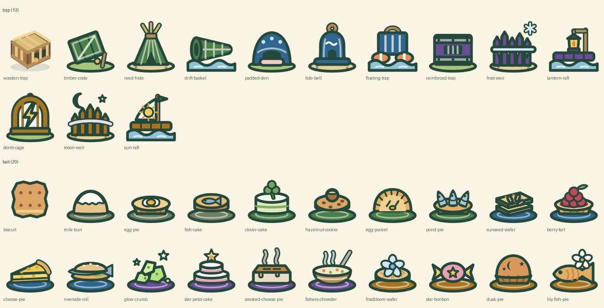
Traps and bait: each has its own silhouette, and each bait is a dish. 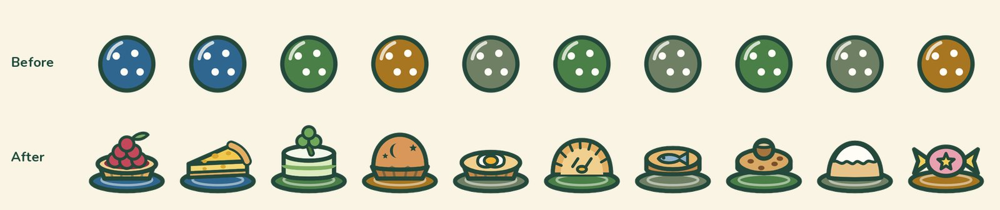
Bait before and after: one shared ball in four colours became a dish for each. 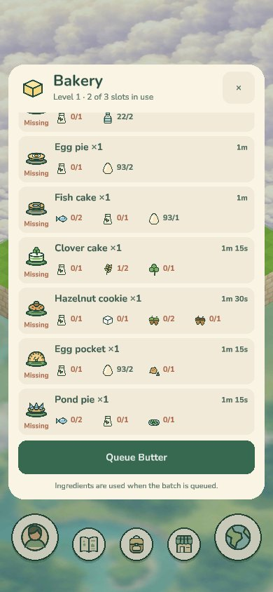
In the game: the Bakery's bait recipes with the new icons. 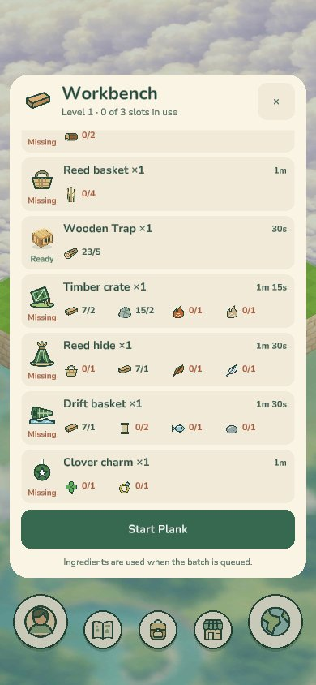
In the game: the Workbench's traps.
Critter portraits
The first critter icons were renders of the 3D models. Round painted portraits replaced them. The portraits are generated placeholder art.
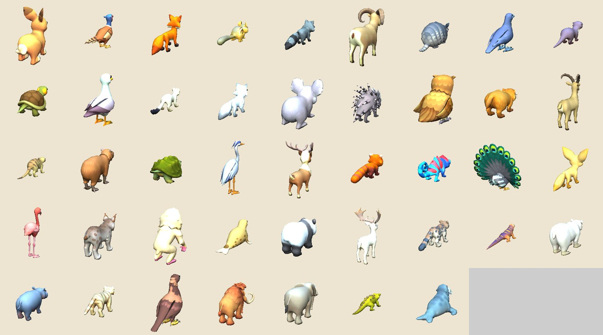
Before: renders of the critters' 3D models, many seen from behind. 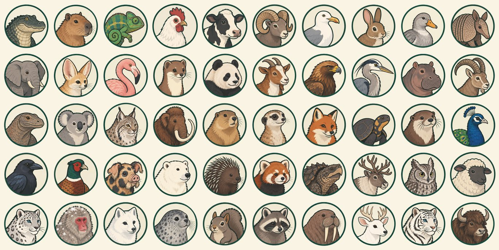
After: fifty painted portraits in a round frame.
Farm animals on the map
The map pins for the farm animals moved from renders of their 3D models to the painted portraits.
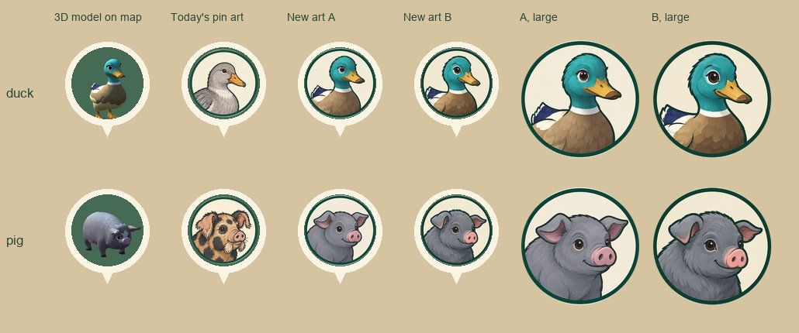
A duck and a pig on a map pin: the 3D model, the pin art of the day, and two new painted candidates, A and B. 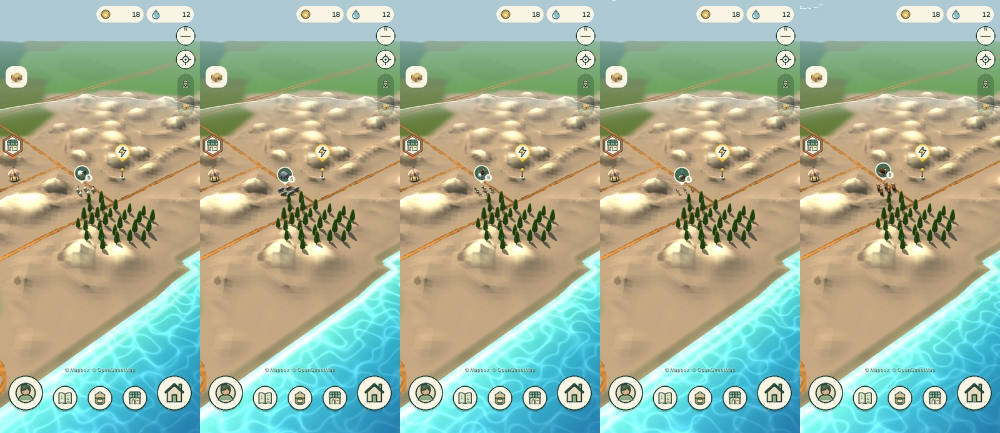
Five flocks on the map, each under its painted pin.